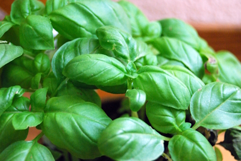
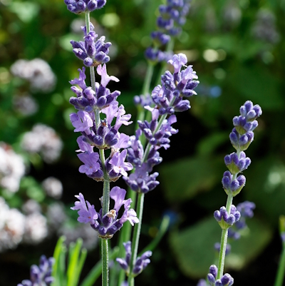
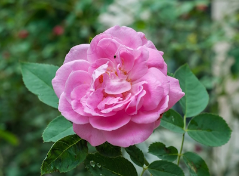

Idee, competenze e progetti: questo è il mio percorso

Perfetto per l’orto e per insaporire i tuoi piatti.

Pianta resistente e profumata, ottima anche per balconi.

Un classico del giardinaggio, simbolo di bellezza e cura.